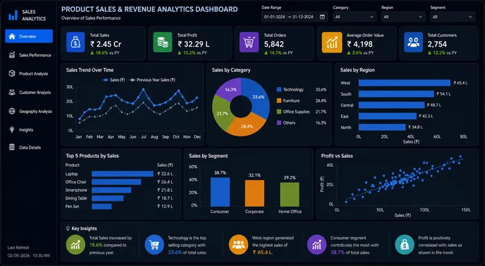
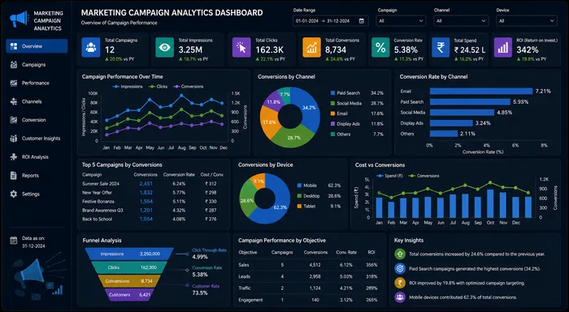
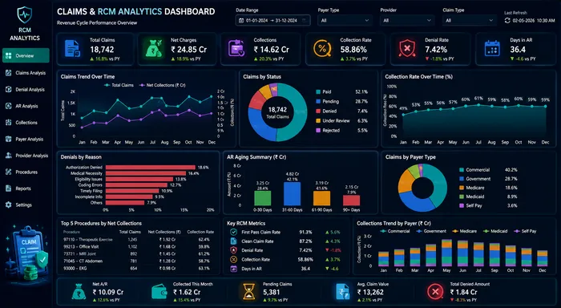

Product Sales & Revenue
Revenue patterns, product contribution and sales trends in one Power BI view.
Kurian Abraham · 3 Power BI dashboards
I build SQL, Python and PySpark pipelines, check the data at each step, and ship Power BI dashboards you can trace to the source.
Three dashboards from commercial, marketing and healthcare work, and one pipeline concept.

Revenue patterns, product contribution and sales trends in one Power BI view.

Channel performance, lead generation and return on spend, read through CTR, CPC, CPA and ROAS.

Claims, billing gaps, outstanding amounts and operating indicators for a healthcare revenue cycle.
A concept for organising transaction signals, checking their quality and preparing datasets for analysis.
Three kinds of work, often in the same project: the data moves, gets checked, then gets read.
Dashboards, DAX measures, data models and Power Query, built so a KPI means one thing.
Ingestion and transformation in SQL, Python and PySpark on AWS, repeatable from source to model.
KPI frameworks, SQL analysis, data quality rules and automation for reports teams rely on.
How I check a number
Before I build a report, I check what one row of the table means. A join from orders to shipments can count an order twice, and the total is wrong before anyone opens the dashboard.
Five rows from an orders-to-shipments join. Compare two, find the repeated order, then remove it and watch the revenue change.
Here a row is a shipment, not an order. Checking that takes minutes; explaining a wrong total in a meeting takes longer.
| Compare | order_id | shipment_id | order_total (₹) |
|---|